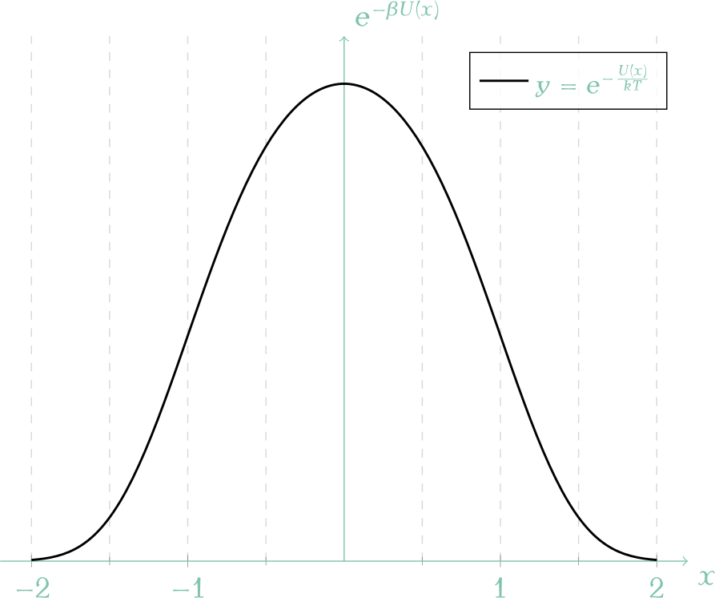

A Blog Entry on Bayesian Computation by an Applied Mathematician
$$
$$
1 背景
Krauth は (Bernard et al., 2009) において event-chain Monte Carlo アルゴリズムを提案した．
その後この手法は一般の連続系に適用できる形に拡張され，連続スピン系などにも適用されている (酒井佑士, 2017, p. 24)．
2 本論
１粒子が次の one-dimensional anharmonic potential \[ U_{24}(x)=\frac{x^2}{2}+\frac{x^4}{4} \] に従って運動する場合を考える．

このポテンシャルに関する Boltzmann-Gibbs 分布 \(\pi_{24}\) は次の通り：

\[ Z(\beta)=\int^\infty_{-\infty}\pi_{24}(x)\,dx=\frac{e^{\frac{\beta}{8}}}{\sqrt{2}}K_{1/4}\left(\frac{\beta}{8}\right) \]
１粒子非調和振動子は，孤立系としては決定論的な力学系であるが，熱浴に接続すると区分確定的な系になる (Davis, 1984)．この系からは，Newton 力学と熱浴との相互作用の MD モデリングによって，\(\pi_{24}\) からサンプリングすることができる．
この系を「熱浴に接続する」とは，速度を交換出来る仕組みを導入すれば良い．例えば振動中心 \(x=0\) に半透性の弾性的な物体（thermostat）を固定し，振動子が \(x=0\) を通る度に確率 \(\frac{1}{2}\) で弾性衝突して速度を交換する系などとして考えられる．この半透性で弾性的な物体は無視できる幅で振動しながら熱浴と接続されており，温度が一定に保たれているとする．1
この系を十分に放置すると，粒子の位置 \(x\) は Boltzmann-Gibbs 分布 \(\pi_{24}\,\propto\,e^{-\beta U_{24}}\) に従う．
- これを，粒子の位置 \(x\) を力学に基づいて追跡することで \(\pi_{24}\) からサンプリングすることも考えられる．これを MD 法という．
- 一方で Monte Carlo 法によりサンプリングすることが出来る．ここでは Gauss 分布の方が裾が重いので，これを提案分布とした棄却法によりサンプリングできる．積分を実行する場合も重点サンプリング法の考え方で実行できる．
- (Metropolis et al., 1953) などではこの提案分布と対象分布の距離が離れすぎていることが問題なのであった．そこで Markov 連鎖を用いるのである．Metropolis 法とは，正方形の範囲への一様ランダムウォークから，採択-棄却のフィルターを通じて Markov 核を構成する普遍的手続きだと言える．
- 目標分布が因子分解可能であるとき，別のフィルター factorized Metropolis filter を通じても詳細釣り合い条件から Markov 核が構成できる．これは独立な乱数を生成して，全員可決したときに採択する，というよりスピーディーな棄却手続きが可能で consensus と呼ばれている．
- (Chen et al., 1999), (Diaconis et al., 2000) によって詳細釣り合い条件を破る方法 lifting が提案された．これは補助変数法により，同じ方向に進み続けるように設計された Markov 連鎖である．2
- lifting を通じて，アルゴリズムを連続時間ベースにできる．これは，いちいち細かいステップサイズで「提案」するのではなく，次に棄却される位置と時刻をサンプリングすれば良い，というのである．event-driven にすることで連続時間ベースのシミュレーションが可能になるのである．
- この event-driven なバージョンでも，factorized filter と consensus を応用できる．
- \(U\) の評価が高価である場合，これよりも採択率が下がるような bounding potential \(\widehat{U}\) を用いることができる．これをフィルターを狭めるという感覚で thining (Lewis and Shedler, 1979) という．棄却された場合に，本格的に \(U\) を評価する．
References
Footnotes
このとき，thermostat は Maxwell 分布に従うわけではない点に注意．熱浴内の粒子と違って，thermostat は \(x=0\) に固定されているため（例えば無視できる幅で振動しているとする），Maxwell boundary condition と呼ばれる分布に従い，比較的に簡単にサンプリングできる．↩︎
元の状態空間を拡張した上で詳細釣り合い条件の破れを導入する手法を総称して lifting と呼ぶ (酒井佑士, 2017)．特に２値空間との席をとってリフティングをする手法は (Turitsyn et al., 2011) による方法で，(酒井佑士, 2017, pp. 24–) で詳細な解析が与えられている．↩︎